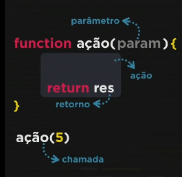

Exempliicando funções em JavaScript com situações que acontecem no dia-a-dia de cada pessoa.
Imaginemos que sua mãe te passa uma função para comprar leite no mercado. Isso tudo gera uma rotina que é similar à função em JavaScript. Sua mãe pede pra você ir comprar o leite e te entrega o dinheiro, você tem a função de ir até o mercado e comprar o leite, depois voltar e entregar o leite para sua mãe.
Nesse cenário, daremos alguns nomes às coisas que aparecem nessa cena.
Quando sua mãe te chama e te passa a ordem, ela é a chamada (ou disparo). O dinheiro seria o parãmetro, juntamente com o pedido (comprar o leite). Você ir até o mercado comprar o leite, chamamos de ação e quando você volta para casa e entrega o leite à sua mãe, chamamos isso de retorno.
Funções são ações executadas assim que são chamadas ou em decorrência de algum evento.
Uma função pode receber parâmetros e retornar um resultado.
Já realizamos funções nas aulas anteriores, mas umas bem simples. Agora iremos adicionar parâmetros na ação da função.
Sintaxe de uma função:
Exercícios:
017